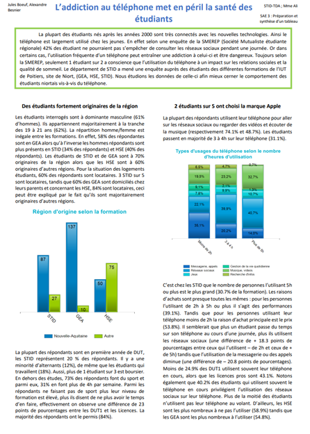
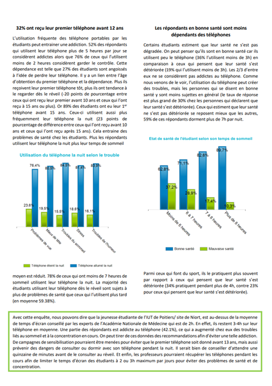

Cleaning and summarizing a dataset for an analysis
The goal of this project was to write a report by using data from a survey about the University of Niort (FRANCE). We had to talk about the usage of phone by the student, by covering three different aspects highlighted by the survey. The data analysis was done using Sphinx, a tool to make surveys and processing the collected data. The written report needed to include charts and plots to illustrate what was being said in the text.
Skills learned :
- Improving my writing skills
- Understanding how to write professional reports
- Using Sphinx
- Creating charts and choosing the correct data in a given context
Illustrations


Overview of the report